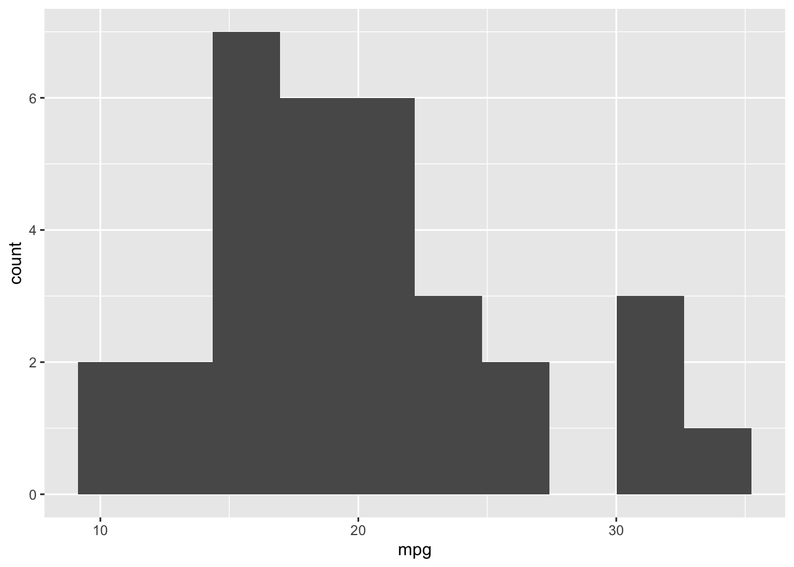
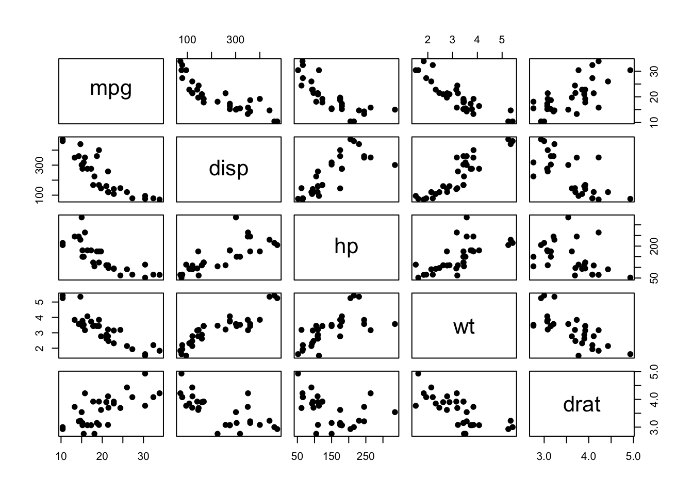

library(tidyverse)
library(wooldridge)
library(car)
library(lmtest)
library(sandwich)
library(stargazer)12 The Classical Linear Model
12.1 Learning Objectives
At the end of this week’s learning students will be able to
- Describe the assumptions of the classical linear model (sometimes referred to as the Gauss-Markov Assumptions) and what each assumption contributes to the estimator.
- Evaluate using empirical methods, whether each of the assumptions are likely to be true of the population data generating function.
- Assess whether the guarantees that are provided by the classical linear model’s requirements are likely to ever be true, including within data the student is likely to encounter.
12.2 Class Announcements
- Lab 2 Deliverable and Dates
- Research Proposal (Today)
- Within-Team Review (Week 14)
- Final Report (Week 14)
- Final Presentation (Week 14)
12.3 Roadmap
Rearview Mirror
- Statisticians create a population model to represent the world.
- The BLP is a useful summary for a relationship among random variables.
- OLS regression is an estimator for the Best Linear Predictor (BLP).
- For a large sample, we only need two mild assumptions to work with OLS
- To know coefficients are consistent
- To have valid standard errors, hypothesis tests
Today
- The Classical Linear Model (CLM) allows us to apply regression to smaller samples.
- The CLM requires more to be true of the data generating process, to make coefficients, standard errors, and tests meaningful in small samples.
- Understanding if the data meets these requirements (often called assumptions) requires considerable care.
Looking Ahead
- The CLM – and the methods that we use to evaluate the CLM – are the basis of advanced models (inter alia time-series)
- (Week 13) In a regression studies (and other studies), false discovery is a widespread problem. Understanding its causes can make you a better member of the scientific community.
12.4 The Classical Linear Model
Comparing the Large Sample Model and the CLM
12.4.1 Part 1
- We say that in small samples, more needs be true of our data for OLS regression to “work.”
- What do we mean when we say “work”?
- If our goals are descriptive, how is a “working” estimator useful?
- If our goals are explanatory, how is a “working” estimator useful?
- If our goals are predictive, are the requirements the same?
- What do we mean when we say “work”?
12.4.2 Part 2
- Suppose that you’re interested in understanding how subsidized school meals benefit under-resourced students in San Francisco East Bay region.
- Using the tools from DATASCI 201, refine this question to a data science question.
- Suppose that there exists two possible data sources to answer the question you have formed:
- A large amount (e.g. 10,000 data points) of individual-level data about income, nutrition and test scores, self-reported by individual families who have opted in to the study.
- A relatively smaller amount (e.g. 500 data points) of Government data about school district characteristics, including district-level college achievement; county-level home prices, and state-level tax receipts.
- A large amount (e.g. 10,000 data points) of individual-level data about income, nutrition and test scores, self-reported by individual families who have opted in to the study.
- What are the tradeoffs to using one or the other data source?
12.4.3 Part 3
- Suppose you elect to use the relatively larger sample of individual-level data.
- Which of the large-sample assumptions do you expect are valid, and which are problematic?
- Or, suppose that you elect to use the relatively smaller sample of school-district-level data.
- Which of the CLM assumptions do you expect are valid, and which do you expect are most problematic?
- What was the research question that you identified?
- What would a successful answer accomplish?
12.4.4 Part 4
- Which data source, the individual or the district-level, do you think is more likely to produce a successful answer?
12.4.5 Part 5
Problems with the CLM Requirements
There are five requirements for the CLM
- IID Sampling
- Linear Conditional Expectation
- No Perfect Collinearity
- Homoskedastic Errors
- Normally Distributed Errors
For each of these requirements:
- Identify one concrete way that the data might not satisfy the requirement.
- Identify what the consequence of failing to satisfy the requirement would be.
- Identify a path forward to satisfy the requirement.
12.5 R Exercise
If you haven’t used the mtcars dataset, you haven’t been through an intro applied stats class!
In this analysis, we will use the mtcars dataset which is a dataset that was extracted from the 1974 Motor Trend US magazine, and comprises fuel consumption and 10 aspects of automobile design and performance for 32 automobiles (1973-74 models). The dataset is automatically available when you start R.
For more information about the dataset, use the R command: help(mtcars)
data(mtcars)
glimpse(mtcars)Rows: 32
Columns: 11
$ mpg <dbl> 21.0, 21.0, 22.8, 21.4, 18.7, 18.1, 14.3, 24.4, 22.8, 19.2, 17.8,…
$ cyl <dbl> 6, 6, 4, 6, 8, 6, 8, 4, 4, 6, 6, 8, 8, 8, 8, 8, 8, 4, 4, 4, 4, 8,…
$ disp <dbl> 160.0, 160.0, 108.0, 258.0, 360.0, 225.0, 360.0, 146.7, 140.8, 16…
$ hp <dbl> 110, 110, 93, 110, 175, 105, 245, 62, 95, 123, 123, 180, 180, 180…
$ drat <dbl> 3.90, 3.90, 3.85, 3.08, 3.15, 2.76, 3.21, 3.69, 3.92, 3.92, 3.92,…
$ wt <dbl> 2.620, 2.875, 2.320, 3.215, 3.440, 3.460, 3.570, 3.190, 3.150, 3.…
$ qsec <dbl> 16.46, 17.02, 18.61, 19.44, 17.02, 20.22, 15.84, 20.00, 22.90, 18…
$ vs <dbl> 0, 0, 1, 1, 0, 1, 0, 1, 1, 1, 1, 0, 0, 0, 0, 0, 0, 1, 1, 1, 1, 0,…
$ am <dbl> 1, 1, 1, 0, 0, 0, 0, 0, 0, 0, 0, 0, 0, 0, 0, 0, 0, 1, 1, 1, 0, 0,…
$ gear <dbl> 4, 4, 4, 3, 3, 3, 3, 4, 4, 4, 4, 3, 3, 3, 3, 3, 3, 4, 4, 4, 3, 3,…
$ carb <dbl> 4, 4, 1, 1, 2, 1, 4, 2, 2, 4, 4, 3, 3, 3, 4, 4, 4, 1, 2, 1, 1, 2,…12.5.1 Questions:
- Using the
mtcarsdata, quickly reason about the variables that we’re interested in studying:
mtcars %>%
ggplot() +
aes(x=mpg) +
geom_histogram(bins=10)
mtcars %>%
select(mpg, disp, hp, wt, drat) %>%
pairs(pch=19)
- Using the
mtcarsdata, run a linear regression to find the relationship between miles per gallon (mpg) on the left-hand-side as a function of displacement (disp), gross horsepower (hp), weight (wt), and rear axle ratio (drat) on the right-hand-side. That is, fit a regression of the following form:
\[ \widehat{mpg} = \hat{\beta_{0}} + \hat{\beta}_{1} disp + \hat{\beta}_{2}horse\_power + \hat{\beta}_{3}weight + \hat{\beta}_{4}drive\_ratio \]
- For each of the following CLM assumptions, assess whether the assumption holds. Where possible, demonstrate multiple ways of assessing an assumption. When an assumption appears violated, state what steps you would take in response.
- I.I.D. data
- Linear conditional expectation
- No perfect collinearity
- Homoskedastic errors
- Normally distributed errors
# goal:
# consequence if violated:# goal:
# consequence if violated:# goal:
# consequence if violated:# goal:
# consequence if violated:# goal:
# consequence if violated:In addition to the above, assess to what extent (imperfect) collinearity is affecting your inference.
Interpret the coefficient on horsepower.
Perform a hypothesis test to assess whether rear axle ratio has an effect on mpg. What assumptions need to be true for this hypothesis test to be informative? Are they?
Choose variable transformations (if any) for each variable, and try to better meet the assumptions of the CLM (which also maintaining the readability of your model).
(As time allows) report the results of both models in a nicely formatted regression table.